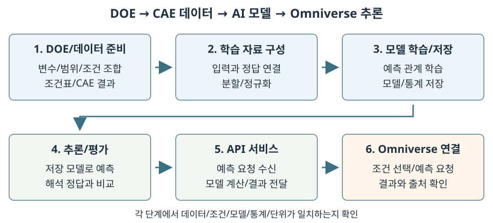
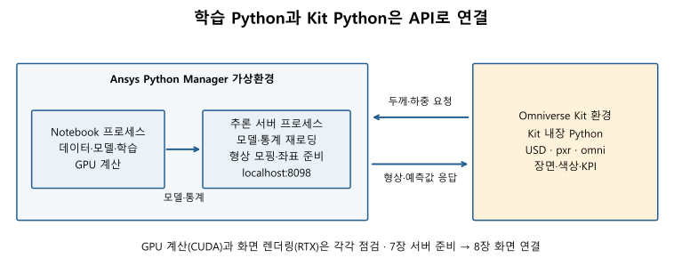

01장 / 셀 08 / Console 03CMD
python -m notebook education/notebooks
학습 목표: 전체 교육 흐름 파악 / 실습환경 준비와 동작 확인
| 읽을 순서 | 알아볼 내용 |
|---|---|
| 1. 교육 전체 개요 | CAE 데이터 학습/Omniverse 추론의 흐름, 교육용 예제, Day 1/Day 2의 구성 |
| 2. 실습 도구와 실행환경 | Python/Notebook/PhysicsNeMo/Omniverse의 역할 |
| 3. 실습환경 준비 | Ansys Python Manager로 실습환경 준비 |
| 4. 폴더와 Notebook | 교육 파일 복사, 가상환경 생성, 첫 코드 실행 |
| 5. 실행환경 확인 | GPU/패키지/해석 파일/Kit이 실제로 동작하는지 확인 |
| 6. 점검 결과 저장 | 실행환경 점검 결과를 JSON 파일로 저장 |
| 용어 | 쉬운 설명 |
|---|---|
| 하중 | 물체에 가하는 힘. 이번 예제에서 크기의 단위는 N(뉴턴) |
| 변위 | 원래 위치에서 얼마나, 어느 방향으로 이동했는지. 단위는 mm |
| 응력 | 힘을 받은 물체 내부의 힘 전달 상태를 나타내는 값. 단위는 MPa |
| 해석 조건 | 계산할 때 정해 놓은 형상/재료/하중/고정 방법 등 |
결과를 읽을 때 구분할 점
준비된 CAE 데이터 → 학습 자료 구성 → AI 모델 학습/저장
→ 추론/정답 비교 → API 연결 → Omniverse에서 예측 요청/결과 확인
학습 자료의 기본 구성: CAE 형상/조건/결과를 입력과 정답으로 연결
입력 변수와 예측 대상은 문제의 목적에 맞게 선정.
| 구분 | 담는 정보 | 구조해석 데이터에서의 의미 |
|---|---|---|
| 형상/위치 정보 | 계산 대상의 모양과 결과를 구할 위치 | 메시, 노드 번호, X/Y/Z 좌표 |
| 설계/해석 조건 | 결과에 영향을 주는 변수와 고정된 조건 | 치수, 재료, 하중, 고정 방법 등 |
| 학습 정답 | CAE가 해당 조건에서 계산한 결과 | 위치별 응력/변위 등 |
| AI 예측 | 학습 모델이 입력을 받아 계산한 결과 | 같은 위치와 조건에 대한 예측값 |
| Omniverse 표시 | 예측값과 그 값의 출처를 장면에 연결 | 결과 분포, 최대값/위치, 조건/모델 정보 |
| 자료의 역할 | 사용하는 이유 |
|---|---|
| train — 학습 자료 | 입력과 정답의 관계를 배우도록 모델 조정 |
| validation — 검증 자료 | 학습 중 상태를 확인하고 저장 모델 선택 |
| test — 시험 자료 | 학습과 모델 선택에 사용하지 않은 조건에서 성능 확인 |
DOE 기반 준비 → 학습 자료 구성 → 모델 학습 → 추론/평가 → API/Omniverse 연결
| 단계 | 수행하는 작업 | 다음 단계에 전달할 것 |
|---|---|---|
| 1. DOE 기반 데이터 준비 | 변수/범위/조건 조합을 계획해 CAE 결과 준비. 수업에서는 준비된 조건표/형상/결과의 연결 확인 | DOE 조건표/CAE 결과/단위/출처 |
| 2. 학습 자료 구성 | 입력과 정답 연결, 학습/검증/시험 분할, 숫자 범위 정규화 | Dataset/분할/정규화 통계 |
| 3. 모델 학습과 저장 | 예측이 정답에 가까워지도록 학습하고 검증 기준으로 모델 선택 | 모델 파일/설정/학습 기록 |
| 4. 추론과 평가 | 저장 모델을 불러와 예측하고 같은 조건의 해석 정답과 비교 | 예측 결과/오차/사용 모델 정보 |
| 5. API 서비스 연결 | 외부 요청을 받아 같은 모델로 계산하고 결과 전달 | 예측 요청/응답 통로 |
| 6. Omniverse 연결 | 조건을 선택해 추론을 요청하고 결과를 장면과 수치로 표시 | 결과 화면/조건/모델 출처 |

단계 사이의 자료 연결
아래 표: 이후 장에서 사용할 자료의 연결 안내. 지금 모두 암기할 대상은 아님.
사용 단계: 위 작업 흐름 표의 1~6단계와 같은 번호
| 자료/형식 | 역할과 만드는 방법 | 사용 단계 |
|---|---|---|
| CSV | DOE의 두께/하중 조건이나 평가 결과를 행과 열로 정리한 표 | 1. DOE 기반 데이터 준비 / 4. 추론과 평가 |
| RST | ANSYS 구조해석으로 얻은 메시와 위치별 응력/변위를 담은 결과 파일 | 1. DOE 기반 데이터 준비: 케이스별 결과 확보와 변환 |
| VTU | ANSYS 결과 RST → PyDPF 변환 → 메시/좌표/응력/변위를 담은 파일 | 1. DOE 기반 데이터 준비에서 생성 → 2. 학습 자료 구성에서 읽기 |
| PyTorch Dataset | CSV 조건 + VTU 좌표/응력/변위로 구성. 한 케이스의 입력/정답을 꺼내 제공 | 2. 학습 자료 구성에서 생성 → 3. 모델 학습 / 4. 추론과 평가에 활용 |
| 정규화 통계 | 학습 자료에서 계산한 평균/표준편차. 입력/정답의 범위를 조정하고 예측을 원래 단위로 복원하는 기준 | 2. 학습 자료 구성에서 계산 → 3~5단계에서 같은 기준 사용 |
| 체크포인트 | 학습한 모델의 가중치와 설정 등을 저장해 다시 사용하는 파일 | 3. 모델 학습과 저장에서 생성 → 4. 추론과 평가 / 5. API 서비스 연결에서 불러오기 |
| API 응답 | 추론 서버가 계산한 예측값과 사용 조건/모델 정보를 전달하는 자료 | 5. API 서비스 연결에서 반환 → 6. Omniverse 연결에서 표시 |
| USD 장면 | 형상과 표시 속성/결과 출처를 담는 3D 장면 | 6. Omniverse 연결에서 구성하고 저장 |
연결 시 확인할 항목: 모델/데이터/정규화 통계/단위
좌표의 mm와 m를 혼동하면 위치의 의미가 달라짐. 화면 표시뿐 아니라 데이터의 대응 관계도 확인 필요.
Day 1: 해석 데이터 이해와 온도 예제의 모델 학습
예제 연결: 4장 공통 온도 문제로 모델 차이 비교 → 5장 후크 응력/변위 학습에 적용
| 장 | 배울 내용 | 직접 해 볼 일 |
|---|---|---|
| 1. 개요와 환경 준비 | 전체 흐름과 도구의 역할 | 프로그램을 준비하고 기본 실행 결과 확인 |
| 2. CAE 학습 데이터 준비와 ANSYS 결과 변환 | DOE 조건 선정, Workbench를 통한 ANSYS 해석 데이터 준비, 결과 구조 | 준비된 RST를 PyDPF로 읽어 VTU로 정리 |
| 3. CAE 학습 데이터 구성과 전처리 | 입력/정답/학습/검증/시험 자료 | 데이터를 나누고 숫자의 범위를 조정 |
| 4. PhysicsNeMo의 AI 모델 이해와 사용 | GNN/Neural Operator와 FNO/Transolver의 개념 | 공통 온도 자료로 세 모델을 학습하고 예측/오차 확인 |
Day 2: 후크 모델 학습/평가와 화면 연결
| 장 | 배울 내용 | 직접 해 볼 일 |
|---|---|---|
| 5. AI 예측 모델로 후크의 응력/변위 학습하기 | 학습/검증과 모델 선택, 학습 횟수/노드 수의 영향 | 100/1,000에폭과 노드 수 비교를 수행하고 모델/학습 기록 저장 |
| 6. AI 예측 모델로 후크의 응력/변위를 예측하고 평가하기 | 남겨 둔 시험 케이스에서 오차 평가 | 5장의 같은 모델을 불러와 ANSYS 정답과 그림/MAE/RMSE/최대값/위치 비교 |
| 7. Omniverse 연결을 위한 AI 추론 서버 준비 | 두께 모핑과 추론 서버, 요청/응답의 역할 | FastAPI/Uvicorn 서버를 실행하고 두께/하중 요청과 결과 전달 확인 |
| 8. Omniverse에서 후크의 두께/하중에 따른 응력/변위 확인하기 | 슬라이더 요청과 형상/응력/변위 크기 표시 | 두께/하중을 바꾸어 예측을 요청하고 응답 상태/단위/최대값 확인 |
Python: 컴퓨터가 수행할 작업 순서를 작성하는 언어
Python 설치: 작성한 코드를 실행할 프로그램 준비
| 용어 | 쉬운 설명 | 이번 교육에서의 사용 |
|---|---|---|
| 코드 | 컴퓨터가 수행할 일을 적은 문장 | 파일 읽기, 모델 계산, 결과 확인 |
| 패키지 | 다른 사람이 만들어 놓은 기능 묶음 | NumPy로 숫자 처리, PyVista로 해석 데이터 읽기 |
| pip | Python 패키지를 설치하는 도구 | 필요한 기능을 가상환경에 추가 |
| 가상환경 | 프로젝트별로 Python 패키지를 따로 관리하는 공간 | 교육에 필요한 패키지들을 한곳에서 관리 |
| Ansys Python Manager | Python 설치와 가상환경 관리를 도와주는 프로그램 | 버튼과 메뉴로 Python/Notebook 준비 |
| Jupyter Notebook | 설명/코드/실행 결과를 한 문서에서 보는 도구 | 지금 읽는 .ipynb 교재 실행 |
| 커널(kernel) | Notebook의 Python 코드를 실제로 실행하는 프로그램 | 셀 사이의 변수와 실행 상태를 기억 |
| Console(콘솔) | 명령을 입력하고 실행 결과를 보는 창 | 패키지 설치, GPU 확인, Kit 실행 |
| 프로그램 쪽 | 하는 일 |
|---|---|
| Manager로 준비한 Python | 데이터를 읽고, 모델을 학습하고, 예측값을 계산 |
| Kit에 들어 있는 Python | 예제 형상과 추론 결과의 색상/수치를 3D 화면에 표시 |
| 두 프로그램을 연결하는 API | Kit의 예측 요청을 전달하고 계산 결과를 돌려줌 |
API 요청 항목: 두께/총하중 두 값
모핑: 기준 형상의 노드 좌표를 바꾸어 요청 두께의 형상 구성
예: 새 조건 9 mm/300 N 요청 → 서버에서 두께 9 mm로 모핑 → 전체 노드 X/Y/Z와 두 조건으로 추론 → Kit 표시. 유효한 동일 조건 결과는 재사용.

localhost:8098: 같은 컴퓨터에서 실행 중인 API 서버의 주소참고: PhysicsNeMo 개요, PyTorch 모델과의 연결/저장 기능, Kit 개요, OpenUSD 소개
실행 장소: Windows 바탕화면/시작 메뉴
경로(path): 파일/폴더의 위치를 나타내는 주소
개인 폴더 예시: X:\student01 — student01은 본인의 영문 폴더 이름으로 변경
X:\student01Save로 설정 저장
첫 번째 설정: 가상환경 생성 위치
기존 가상 장비의 점검 버전: Python 3.12.10
교육 지정 3.12 계열로 설치한 뒤, 다음 단계에서 해당 Python으로 가상환경 생성.
실행 장소: 파일 탐색기
X:\student01\workshopeducation\notebooks\01_environment_setup_beginner.ipynb 파일 확인X:\student01\
└─ workshop\ ← 내가 만든 작업 폴더
└─ education\ ← 제공된 교육 폴더 전체
├─ notebooks\ ← 교재
├─ data\ ← 해석 데이터
├─ course_utils\ ← 교재 코드가 사용하는 기능
└─ ...
runs/reports실행 장소: Ansys Python Manager
omniverse-env 입력. 다른 이름을 쓰면 이후 단계에도 같은 이름 적용omniverse-env 선택X:\student01\omniverse-env 확인Launch options → Working Directory → X:\student01\workshop 입력
Working Directory: 프로그램이 작업을 시작할 폴더. 드라이브를 포함한 전체 경로 입력
X:\student01\
├─ omniverse-env\ ← Manager가 만든 Python/패키지 공간
└─ workshop\ ← 프로그램이 일을 시작할 폴더
└─ education\ ← 교재/입력 데이터/실습 결과
후크 교육용 환경 확인: omniverse-env 선택. 4장 전용 환경은 5.1.6절에서 별도로 준비
실행 장소: Manager의 Manage Python environments 탭
omniverse-env 선택 → Install Python default packages 실행ansys-dpf-core) 설치| 패키지 | 이번 교육에서 이해할 역할 |
|---|---|
| NumPy | 많은 숫자를 묶어서 계산 |
| SciPy | 과학/공학 계산 기능 |
| pandas | 행과 열로 된 표 처리 |
| Matplotlib | 그래프 그리기 |
| PyVista | 메시와 해석 결과 파일 읽기/표시 |
| scikit-learn | 머신러닝 보조 기능. 주 학습 도구는 뒤에서 설치할 PyTorch/PhysicsNeMo |
의존성: 패키지가 작동하는 데 필요한 다른 패키지. 실제 설치 목록은 표보다 많을 수 있으므로 Manager 버전별 목록 확인.
교재가 보이지 않을 때
python -m notebook education/notebooks
명령 입력: 전체 명령 붙여넣기 → Enter → 선택한 가상환경의 Python으로 Notebook 실행
(omniverse-env)/X:\...>는 Console의 프롬프트이므로 입력하지 않음.
[ ] 미실행 / [*] 실행 중 / [1] 등 숫자는 실행 순서첫 코드의 수정 항목: 개인 폴더/가상환경 이름 두 곳
PERSONAL_ROOT = Path(r'X:\student01') # 자신의 개인 폴더
ENV_NAME = 'omniverse-env' # Manager에서 만든 가상환경 이름
#: 주석 / =: 오른쪽 값을 왼쪽 이름에 저장Path(...): 경로 처리 도구r'...': Windows 경로의 역슬래시를 그대로 적는 문자열 표기sys.executable: 실제 Python 실행 파일 / sys.prefix: Python 환경 위치from pathlib import Path
import sys
import os
import json
# 자신의 개인 폴더와 Manager에서 생성한 가상환경 이름으로 수정한다.
PERSONAL_ROOT = Path(r'X:\student01')
ENV_NAME = 'omniverse-env'
# PERSONAL_ROOT를 None으로 두면 '비교 경로 미설정'으로 표시한다.
EXPECTED_ENV_PREFIX = PERSONAL_ROOT / ENV_NAME if PERSONAL_ROOT is not None else None
working_dir = Path.cwd().resolve()
education_dir = next((p for base in [working_dir, *working_dir.parents]
for p in [base, base / 'education']
if (p / 'course_utils/environment.py').is_file()), None)
if education_dir is None:
raise FileNotFoundError('교육 프로젝트 루트 또는 education 폴더에서 실행하세요.')
if str(education_dir) not in sys.path:
sys.path.insert(0, str(education_dir))
import course_utils
from course_utils.environment import (runtime_snapshot, physics_dependencies,
data_inventory, model_probe, dpf_probe, digest)
snapshot = runtime_snapshot(EXPECTED_ENV_PREFIX)
print('Python 버전:', snapshot['python_version'])
print('실제 커널 Python:', snapshot['python_executable'])
print('현재 환경:', snapshot['prefix'])
print('가상환경 여부:', snapshot['is_virtual_environment'])
environment_match_status = ('비교 경로 미설정' if EXPECTED_ENV_PREFIX is None
else '일치' if snapshot['manager_environment_confirmed'] else '불일치')
print('예상 가상환경 경로:', EXPECTED_ENV_PREFIX)
print('교육용 가상환경 경로 일치:', environment_match_status)
print('교육 폴더:', education_dir)
if not snapshot['is_virtual_environment'] or not snapshot['manager_environment_confirmed']:
print('CHECK: PERSONAL_ROOT/ENV_NAME과 실제 커널 경로를 확인하세요.')
Python 실행환경 확인
True / False: 조건 충족 / 미충족
정상 출력: 가상환경 여부: True, 교육용 가상환경 경로 일치: 일치
omniverse-env\Scripts\python.exePERSONAL_ROOT/ENV_NAME 확인 → 입력이 맞으면 Notebook의 커널 선택 점검GPU의 역할과 기본 개념
| 교육 도구 | GPU가 하는 일 | 이번 교육의 준비 조건 |
|---|---|---|
| PyTorch/PhysicsNeMo | AI 모델 학습과 예측에 필요한 숫자 계산 | CUDA 계산을 지원하는 NVIDIA GPU, CUDA 기능이 포함된 PyTorch, 호환 드라이버 |
| Omniverse Kit의 RTX Renderer | 후크 형상과 결과 색을 3D 화면으로 표시 | RTX 렌더링을 지원하는 NVIDIA GPU와 그래픽 드라이버 |
| 전체 교육 실습 | 모델 계산과 3D 시각화 연결 | 위의 계산 기능과 렌더링 기능을 모두 사용할 수 있는 환경 |
장비 선택 기준
| 활용 단계 | 기대할 수 있는 장점 | 교육에서의 활용 |
|---|---|---|
| 모델 학습 | 여러 데이터의 계산을 함께 처리해 학습 시간을 줄일 수 있음 | 설정을 바꾸어 학습하고 결과를 비교하는 반복 실험 |
| 모델 예측 | 많은 지점의 값을 묶어서 계산할 때 처리 속도를 높일 수 있음 | 후크 전체의 응력/변위 분포 예측 |
| 3D 시각화 | 화면 회전/확대와 결과 갱신을 실시간으로 확인하는 데 유리 | 두께에 맞게 바뀐 형상과 응력/변위 크기 분포를 여러 방향에서 관찰 |
성능 판단 시 주의점
실습 장비 L4
단계별 확인: 가상 장비의 GPU 할당/드라이버 → GPU 이름 표시 → CUDA 실제 계산 → Kit 실제 화면
GPU 요구사항 조사 기준: NVIDIA 공식 문서, 2026-10-08.
실행 장소: Manager에서 omniverse-env 선택 → Launch options의 Console
설정한 Working Directory에서 시작. 아래 명령은 Notebook이 아닌 CMD에서 하나씩 실행 → 결과 확인.
nvidia-smi
python -c "import sys; print(sys.executable)"
| 명령 | 하는 일 | 확인할 결과 |
|---|---|---|
nvidia-smi |
NVIDIA GPU와 드라이버 상태 표시 | GPU 이름/Driver Version/CUDA Version |
python -c ... |
짧은 Python 코드를 콘솔에서 실행 | Notebook의 Python 경로와 동일한 경로 |
nvidia-smi의 CUDA Version: 드라이버가 지원하는 범위아래 조합의 기준: 기존 L4/드라이버 582.16 환경. 다른 장비에서는 강사가 공식 설치 안내와 드라이버 지원 범위 확인.
python -m pip install --upgrade "torch==2.14.1+cu130" "torchvision==0.29.1+cu130" --index-url https://download.pytorch.org/whl/cu130
| 명령의 일부 | 의미 |
|---|---|
python -m pip install |
지금 선택한 Python 환경에 패키지 설치 |
--upgrade |
지정한 조건에 맞게 설치하거나 기존 설치 갱신 |
torch==... |
PyTorch의 설치 버전 지정 |
+cu130 |
CUDA 13.0을 지원하는 빌드 표시 |
--index-url ... |
설치 파일을 찾을 PyTorch 공식 배포 주소 지정 |
CUDA 라이브러리: PyTorch 배포본에 포함된 실행 라이브러리 사용. 이번 절차에서는 CUDA Toolkit/cuDNN 별도 설치나 CUDA 코드 직접 컴파일 불필요.
설치 완료 후: 같은 Console에서 버전/CUDA/GPU 접근 확인
python -c "import torch; print('Torch:', torch.__version__); print('CUDA build:', torch.backends.cuda.is_built()); print('CUDA runtime:', torch.version.cuda); print('GPU available:', torch.cuda.is_available())"
| 출력 | 뜻과 다음 행동 |
|---|---|
No module named 'torch' |
현재 Python에서 PyTorch를 찾지 못함. 같은 가상환경에서 설치가 완료되었는지 확인 |
버전에 +cpu, CUDA build False |
CPU용 설치 상태. 위의 CUDA용 설치 명령과 선택한 가상환경을 다시 확인 |
CUDA build True, GPU available False |
CUDA 기능은 있지만 현재 GPU를 사용하지 못함. 드라이버/GPU 접근/실행 환경 확인 |
두 항목 모두 True |
GPU 접근 가능. 뒤의 실제 연산 점검까지 확인 |
True / False: 조건 충족 / 미충족import torch: 설치한 PyTorch 기능 불러오기실행 장소: 같은 Console. Working Directory: workshop
triton-windows / 코드에서 불러오는 이름 triton>=3.8,<3.9)-r 옵션으로 읽기입력 방법: 빈 줄로 구분된 명령을 하나씩 실행한 뒤 결과 확인
python -m pip install -r education/requirements-course.txt "torch==2.14.1+cu130" "torchvision==0.29.1+cu130" --extra-index-url https://download.pytorch.org/whl/cu130
python -m pip check
python -c "import torch, physicsnemo, triton; print('torch:', torch.__version__); print('CUDA build:', torch.backends.cuda.is_built()); print('CUDA runtime:', torch.version.cuda); print('GPU available:', torch.cuda.is_available()); print('physicsnemo import: OK'); print('Triton:', triton.__version__)"
목록에 직접 지정한 패키지 10개
| 패키지 이름 | 설치 조건 | 쉬운 역할 설명 |
|---|---|---|
packaging |
버전 제한 없음 | 패키지의 버전과 필요한 조건을 읽고 비교하는 도구 |
fastapi |
버전 제한 없음 | 7장에서 예측 요청을 받고 결과를 돌려주는 API 구성, 8장에서 화면 연결 |
uvicorn |
버전 제한 없음 | FastAPI로 만든 API 프로그램을 실행하는 서버 |
torch |
명령에서 2.14.1+cu130 지정 |
PyTorch. 숫자 계산/AI 모델/GPU 학습에 사용 |
torchvision |
명령에서 0.29.1+cu130 지정 |
PyTorch 관련 도구 모음. PhysicsNeMo가 요구하는 패키지이며, 이번 수업에서 별도 이미지 학습을 하지는 않음 |
nvidia-physicsnemo |
>=2.2,<3 |
과학/공학 AI 모델을 구성하고 저장/불러오는 데 사용하는 프레임워크 |
triton-windows |
Windows에서 >=3.8,<3.9 |
PyTorch 2.14와 함께 사용할 GPU 계산 도구. 코드에서는 triton으로 불러옴 |
GitPython |
==3.1.49 |
Python에서 Git 저장소 정보를 다루는 도구. 모델 관련 기능의 의존성 준비에 사용 |
gitdb |
==4.0.12 |
GitPython이 Git 데이터를 읽는 데 사용하는 보조 도구 |
smmap |
==5.0.3 |
Git 데이터 파일을 읽을 때 사용하는 보조 도구 |
설치 조건과 결과 읽기
==: 특정 버전 지정 / >=2.2,<3: 2.2 이상/3 미만--extra-index-url/+cu130 유지pip check 정상 출력: No broken requirements found.nvidia-physicsnemo ↔ 코드의 physicsnemorequirements-environment-base.txtTriton 실제 GPU 계산 확인
같은 Console에서 준비된 점검 파일 실행 → Triton 계산과 PyTorch 계산 비교.
python education/preparation/check_triton_gpu.py
확인 항목: PyTorch 2.14.1+cu130 / Triton 3.8 계열 / GPU 이름 / Triton GPU 계산: PASS
버전/pip check는 설치 상태 확인용. 실제 계산 성공 여부는 GPU 점검의 PASS로 확인.
DLL load failed 발생 시: Microsoft Visual C++ 2015–2022 재배포 가능 패키지(x64)의 설치 여부 확인. 공식 Windows 지원 프로젝트의 설치 안내 참고.
MISSING은 현재 커널에서 패키지를 찾지 못한 상태정상 기준: CUDA 빌드: True / GPU 사용 가능: True / GPU 정보의 tensor_probe_passed: True
tensor_probe_passed: 작은 GPU 계산의 성공 여부사용할 GPU 지정: 미설정(기본 설정 사용): 기본 설정 사용 안내이며 오류가 아님visible_devices_setting: null: CUDA_VISIBLE_DEVICES를 별도 지정하지 않은 상태null: 값 없음참고: NVIDIA CUDA 프로그래밍 모델, PhysicsNeMo 시스템 요구사항, Omniverse RTX Renderer, Omniverse 기술 요구사항, Omniverse RTX Renderer 기능, NVIDIA L4 공식 제품 정보, NVIDIA 설명, PyTorch 공식 설치 안내, PyTorch 유지관리자 설명, PyTorch CUDA 배포 목록, PhysicsNeMo 설치 안내, pip 설치 옵션, Triton Windows 지원 프로젝트 안내, PyTorch 환경변수 안내
snapshot = runtime_snapshot(EXPECTED_ENV_PREFIX)
for group, packages in snapshot['packages'].items():
print('\n[' + group + ']')
for name, installed in packages.items():
print(name, ':', installed if installed is not None else 'MISSING')
if snapshot['packages']['jupyter']['notebook'] is None:
print('CHECK: 이 Python에 notebook 배포 패키지가 없습니다. Manager의 Launch Jupyter Notebook으로 설치/실행 환경을 확인하세요.')
패키지 실행과 GPU 연산 점검
점검 순서: PyTorch CUDA/PhysicsNeMo 의존성 → 작은 Transolver의 CPU 입출력 → 별도 GPU 행렬 계산
try/except: 오류 내용을 출력하고 다음 점검을 이어가기 위한 코드CHECK 발생 시: 원인/안내 확인 후 조치# 설치된 PyTorch의 CUDA 빌드와 GPU 접근을 구분한다.
cuda_check = {'installed': False, 'built_with_cuda': False, 'cuda_available': False}
try:
import torch
cuda_check = {'installed': True, 'torch_version': str(torch.__version__),
'torch_file': str(torch.__file__),
'built_with_cuda': torch.backends.cuda.is_built(),
'runtime_version': torch.version.cuda,
'cuda_available': torch.cuda.is_available(),
'visible_devices_setting': os.environ.get('CUDA_VISIBLE_DEVICES')}
print('PyTorch 버전:', cuda_check['torch_version'])
print('CUDA 빌드:', cuda_check['built_with_cuda'])
print('PyTorch CUDA 버전:', cuda_check['runtime_version'])
print('GPU 사용 가능:', cuda_check['cuda_available'])
visible_devices = cuda_check['visible_devices_setting']
print('사용할 GPU 지정:', '미설정(기본 설정 사용)' if visible_devices is None
else repr(visible_devices))
if not cuda_check['built_with_cuda']:
print('CHECK: CPU용 PyTorch입니다. 5.1.3의 CUDA 빌드를 같은 환경에 설치하고 커널을 재시작하세요.')
elif not cuda_check['cuda_available']:
try:
torch.cuda.init()
except Exception as error:
cuda_check['initialization_error'] = type(error).__name__ + ': ' + str(error)
print('CHECK: CUDA 초기화 오류:', cuda_check['initialization_error'])
except Exception as error:
cuda_check['error'] = type(error).__name__ + ': ' + str(error)
print('CHECK: PyTorch 설치/import 확인:', cuda_check['error'])
try:
dependencies = physics_dependencies()
except ImportError as error:
dependencies = {'installed': False, 'all_declared_dependencies_satisfied': False,
'conflicts': [{'requirement': 'packaging', 'installed_version': None}]}
print('PhysicsNeMo 전체 선언 의존성 충족:', dependencies['all_declared_dependencies_satisfied'])
for conflict in dependencies['conflicts']:
print('CHECK:', conflict['requirement'], '/ 현재:', conflict['installed_version'])
try:
model_check = model_probe()
print('점검 모델:', model_check['model_name'])
print('모델 계산 장치:', model_check['model_device'])
print('모델 출력 배열 모양:', model_check['stress_shape'], model_check['displacement_shape'])
print('GPU:', model_check['gpu'])
except Exception as error:
model_check = {'passed': False, 'error': type(error).__name__ + ': ' + str(error)}
print('CHECK: 모델 실행환경 미완료:', model_check['error'])
print('이 점검은 합성 입력을 사용합니다. 학습/정답 평가/체크포인트 갱신은 하지 않습니다.')
print('점검 범위: 모델 생성/CPU 입출력 확인 + 별도의 GPU 텐서 연산. 실제 GPU 학습은 4/5장에서 수행합니다.')
모델/GPU 점검 결과 확인
[1, 8, 1]: 1케이스/8점/점마다 값 1개[1, 8, 3]: 같은 8점/점마다 XYZ 성분 3개점검 모델: physicsnemo/Transolver 확인. 5장 후크 모델의 생성/입출력을 CPU에서 점검| 항목 | 통과 조건 | 의미 |
|---|---|---|
available |
True |
PyTorch에서 GPU에 접근할 수 있음 |
tensor_probe_passed |
True |
GPU에서 수행한 간단한 행렬 계산이 기대한 결과와 일치 |
전체 의존성 충족이 False인 경우: 누락 패키지/버전 불일치 확인 → 문제 해결 → 다시 실행
학습 단계와 구분: 이번에는 기본 동작 점검. 온도 모델 GPU 학습은 4장, 후크 학습은 5장.
4장 전용 환경: Windows용 GNN 추가 패키지와 PyTorch/CUDA 조합 분리. 기존 후크 환경 유지.
Manager → 기존 교육용 환경 → Launch options → Console. 작업 위치 workshop.
python education/preparation/setup_models_environment.py
education/.venv-models다시 점검:
education\.venv-models\Scripts\python.exe education/preparation/check_gnn_environment.py
| 장 | 커널 |
|---|---|
| 1~3장 | 기존 교육용 환경 |
| 4장 | CAE 4장 모델 실습 |
| 5~8장 | 기존 후크 교육용 환경 |
GPU가 없으면 CPU만 점검. 설치 오류 해결 후 같은 명령 재실행. 다른 PC에서는 환경을 새로 설치.
실행 장소: Notebook / 아래 경로의 기준: education 폴더
| 폴더/파일 | 들어 있는 내용 |
|---|---|
notebooks/ |
지금 사용하는 장별 교재 |
data/lhs_doe.csv |
10개 케이스의 두께/하중 조건표 |
data/raw/ |
준비된 ANSYS 결과인 RST 파일 |
data/vtu/ |
메시와 결과를 담은 VTU 파일 |
course_utils/ |
코드 셀에서 불러 쓰는 공통 기능 |
runs/ |
데이터 정리/학습/평가 과정의 결과 |
reports/ |
환경과 실행 상태를 기록한 점검 파일 |
preparation/ |
설치/변환/실행 등을 돕는 스크립트 |
omniverse/ |
3D 장면과 화면을 만드는 코드 |
case_001.vtu 읽기 → 노드/요소/응력/변위/단위 확인첫 셀 중단 시: 파일 누락/해시 불일치 해결 → 첫 셀 재실행 → inventory 준비 후 마지막 기록 저장
inventory = data_inventory(education_dir)
print('case_id / thickness_mm / force_N / nodes')
for row in inventory:
print(row['case_id'], row['thickness_mm'], row['force_N'], row['nodes'])
print('10개 RST와 VTU 파일 해시/DOE 연결 확인 완료')
케이스 목록 확인
| 열 이름 | 의미 |
|---|---|
case_id |
케이스 이름 |
thickness_mm |
두께(mm) |
force_N |
하중 크기(N) |
nodes |
노드 수 |
확인 항목: 10케이스의 이름/두께/하중/노드 수
다음 셀: 대표 파일 case_001.vtu의 배열/단위 점검
import numpy as np
import pyvista as pv
representative_vtu = education_dir / 'data/vtu/case_001.vtu'
vtu_check = {'passed': False, 'file': str(representative_vtu)}
try:
representative_grid = pv.read(representative_vtu)
stress_values = np.asarray(representative_grid.point_data['von_mises_stress'])
displacement_values = np.asarray(representative_grid.point_data['displacement'])
units = {key: str(np.asarray(representative_grid.field_data[key]).reshape(-1)[0])
for key in ['coordinate_unit', 'stress_unit', 'displacement_unit']}
case_name = str(np.asarray(representative_grid.field_data['case_id']).reshape(-1)[0])
passed = bool(case_name == 'case_001' and representative_grid.n_points > 0
and representative_grid.n_cells > 0
and stress_values.shape == (representative_grid.n_points,)
and displacement_values.shape == (representative_grid.n_points, 3)
and np.isfinite(stress_values).all() and np.isfinite(displacement_values).all()
and units == {'coordinate_unit':'mm', 'stress_unit':'MPa', 'displacement_unit':'mm'})
vtu_check.update({'passed':passed, 'case_id':case_name, 'nodes':representative_grid.n_points,
'elements':representative_grid.n_cells, 'stress_shape':list(stress_values.shape),
'displacement_shape':list(displacement_values.shape), 'units':units,
'max_stress_mpa':float(stress_values.max())})
print('VTU:', case_name, representative_grid.n_points, 'nodes /', representative_grid.n_cells, 'elements')
print('응력 / 변위 형태:', stress_values.shape, '/', displacement_values.shape)
print('단위:', units)
print('대표 VTU 실제 읽기 점검:', passed)
except Exception as error:
vtu_check['error'] = type(error).__name__ + ': ' + str(error)
print('CHECK: 대표 VTU 읽기/필드/단위 확인:', vtu_check['error'])
VTU 점검 항목과 출력 해석
| 출력 | 의미 |
|---|---|
13668 nodes / 8024 elements |
계산용 점 13,668개와 요소 8,024개가 들어 있음 |
응력 배열 모양 (13668,) |
각 노드에 응력 값 하나가 있음. 쉼표는 Python 배열 모양 표기 |
변위 배열 모양 (13668, 3) |
각 노드에 X/Y/Z 방향 변위 세 개가 있음 |
coordinate_unit: mm |
좌표 단위 |
stress_unit: MPa |
응력 단위 |
displacement_unit: mm |
변위 단위 |
대표 VTU 실제 읽기 점검 True |
필요한 데이터와 단위를 읽는 점검 통과 |
np.asarray: 데이터를 숫자 배열로 변환shape: 배열의 축별 크기np.isfinite: NaN/무한대 여부 확인실제 단위 출력: {'coordinate_unit': 'mm', 'stress_unit': 'MPa', 'displacement_unit': 'mm'}
실행 장소: Notebook / 필요 프로그램: ANSYS 2025 R2 DPF 서버
Notebook의 Python → PyDPF로 읽기 요청 → DPF 서버 → RST 파일 읽기
ANSYS 경로 설정
ANSYS_DIR: 실제 v252 폴더의 위치AWP_ROOT252가 있으면 해당 경로 사용, 없으면 기본 설치 경로 사용Path(...) 형태로 교체ANSYS_DIR = Path(r'D:\실제설치폴더\ANSYS Inc\v252')
점검 순서: 서버 시작 → case_001의 기존 변위 읽기 → 서버 종료
새 해석 없이 준비된 RST에서 기존 해석 결과를 읽는 기능 확인.
참고: PyDPF 서버 실행 API
ANSYS_DIR = Path(os.environ.get('AWP_ROOT252', 'C:/Program Files/ANSYS Inc/v252'))
if ANSYS_DIR.is_dir():
os.environ['AWP_ROOT252'] = str(ANSYS_DIR)
try:
dpf_check = dpf_probe(ANSYS_DIR, education_dir / 'data/raw/case_001.rst')
print('DPF 실제 읽기 점검:', json.dumps(dpf_check, ensure_ascii=False, indent=2))
except Exception as error:
dpf_check = {'passed': False, 'error': type(error).__name__ + ': ' + str(error)}
print('CHECK: DPF 경로/클라이언트/서버 연결 확인:', dpf_check['error'])
else:
dpf_check = {'passed': False, 'error': 'ANSYS 2025 R2 installation directory not found'}
print('CHECK: ANSYS_DIR를 실제 v252 설치 폴더로 바꾸세요.')
DPF 점검 결과 확인
passed: true: 서버 시작/RST 변위 읽기 성공true/falsefalse/CHECK 발생 시: 오류 내용/ANSYS_DIR 확인Kit: CAE 자료/AI 결과를 3D 화면에 연결할 프로그램의 실행 도구. Python 패키지와 별도 준비.
준비 항목
CUDA 계산 성공과 실제 렌더링 성공은 각각 확인 필요.
실행 장소: 같은 가상환경 Console / 작업 위치: workshop
설치 전 Git 확인
git --version
버전 출력 → 설치 진행. 명령이 없으면 Git for Windows 설치 → Console 새로 열기 → 재확인. 설치 권한이 없으면 강사에게 요청.
신규 설치 명령
python education/preparation/install_omniverse_kit.py --install-dir "X:\ovedu"
--install-dir: 새 폴더 또는 빈 폴더 지정. X:\ovedu는 짧은 설치 경로 예시education/config/kit_runtime.json호환 Kit가 이미 있는 경우: 실행 파일 등록
python education/preparation/install_omniverse_kit.py --register-existing "실제 SDK 경로/kit.exe"
kit.exe의 전체 경로. kit.bat와 구분_build\windows-x86_64\release\kit\kit.exe참고: Kit 요구사항, NVIDIA 드라이버 안내, 공식 앱 빌드 안내
from preparation.launch_kit import configured_kit
KIT_EXE = configured_kit() # 설치/등록 명령이 저장한 경로. 변경 시 --register-existing으로 재등록한다.
kit_check = {'kit_executable': str(KIT_EXE), 'binary_exists': KIT_EXE.is_file(),
'launcher_exists': (education_dir / 'preparation/launch_kit.py').is_file(),
'startup_checked': False}
print('Kit 점검:', kit_check)
print('기본 실행 명령: python education/preparation/launch_kit_basic_revised.py --kit-exe "' + str(KIT_EXE) + '"')
Kit 실행 파일 경로 확인
binary_exists: True: 지정 위치에 kit.exe 존재binary_exists: False: 5.4절 --register-existing으로 실제 kit.exe 재등록 → 위 경로 확인 셀 재실행 → 새 기본 명령 사용python부터 전체 복사education\reports\kit_basic_startup_revised.json 생성 후 창 닫기. 너무 일찍 종료한 경우 재실행KIT_BASIC_VIEW_CONFIRMED/KIT_BASIC_NOTES에 실제 관찰 결과 입력큐브의 역할: AI/API 없이 기본 장면 실행 여부 점검. 후크 연결은 8장에서 진행.
| 내가 확인한 상태 | 입력할 값 |
|---|---|
| 아직 실행하지 않았거나 화면을 확인하지 못함 | None 그대로 유지 |
| 창에 파란 큐브가 정상으로 보임 | True |
| 직접 실행했으나 검은 화면/오류 등 문제가 있음 | False와 관찰 내용 |
정상 관찰 시 입력 예시: True는 대문자로 시작하며 따옴표 없이 입력
KIT_BASIC_VIEW_CONFIRMED = True
KIT_BASIC_NOTES = '파란 큐브가 보이고 창을 정상 종료함'
None: 아직 확인하지 않은 상태True만 입력해도 전체 통과하는 것은 아님runs/environment/kit_basic_revised/stdout.log/stderr.log/kit.logWaiting for RtPso ... compilation: 준비 대기 메시지--verify 추가 → 렌더링/캡처 후 자동 종료. 최대 대기 시간 10분# 기본 Kit 창을 실제 확인한 뒤 True/False 입력. 아직 확인하지 않았다면 None 유지.
KIT_BASIC_VIEW_CONFIRMED = None
KIT_BASIC_NOTES = ''
startup_path = education_dir / 'reports/kit_basic_startup_revised.json'
startup = json.loads(startup_path.read_text(encoding='utf-8')) if startup_path.is_file() else {}
reported_exe = startup.get('kit_executable')
same_executable = bool(reported_exe and Path(reported_exe).resolve() == KIT_EXE.resolve())
capture = education_dir / startup.get('viewport_capture', 'runs/environment/kit_basic_revised/viewport.png')
kit_basic_ready = bool(kit_check['binary_exists'] and same_executable
and startup.get('scene_initialized') and startup.get('render_capture_written')
and capture.is_file() and KIT_BASIC_VIEW_CONFIRMED is True)
kit_check.update({'startup_checked': bool(startup), 'startup_report':startup,
'same_executable':same_executable, 'user_view_confirmed':KIT_BASIC_VIEW_CONFIRMED,
'user_notes':KIT_BASIC_NOTES, 'basic_startup_ready':kit_basic_ready})
print('기본 Kit 화면 확인:', '미확인' if KIT_BASIC_VIEW_CONFIRMED is None else KIT_BASIC_VIEW_CONFIRMED)
print('기본 Kit 준비 완료:', kit_basic_ready)
if not kit_basic_ready:
print('CHECK: 기본 실행 명령, 장면/캡처 기록, 실제 큐브 화면 확인 결과를 점검하세요.')
Kit 점검 결과 확인
기본 Kit 준비 완료: True: 실행 파일/장면 기록/캡처/직접 화면 확인의 조건 충족False인 경우: 미충족 항목 확인저장 대상: Python/패키지/GPU/데이터/DPF/Kit의 점검 결과
커널을 재시작했다면 앞 코드부터 재실행해야 함.
기존 후크 교육용 환경 준비 완료의 확인 항목
4장 전용 환경: 위 결과와 별개. 5.1.6절의 설치 점검 성공/커널 등록 확인
미완료 항목: False/CHECK의 원인 확인 후 기록. 모델 학습/API/화면 연계는 이후 장에서 점검.
결과 저장 위치: reports/environment_lesson_check_beginner.json
Notebook 저장: Ctrl+S
required_packages_present = all(value is not None for group in snapshot['packages'].values()
for value in group.values())
gpu_check = model_check.get('gpu', {})
gpu_ready = bool(gpu_check.get('available') and gpu_check.get('tensor_probe_passed'))
classroom_environment_ready = bool(
snapshot['python_312'] and snapshot['is_virtual_environment']
and snapshot['manager_environment_confirmed'] and required_packages_present
and dependencies['all_declared_dependencies_satisfied'] and model_check['passed'] and gpu_ready
and dpf_check['passed'] and vtu_check['passed'] and kit_basic_ready)
lesson_report = {'snapshot': snapshot, 'dependencies': dependencies, 'model_probe': model_check,
'dpf_probe': dpf_check, 'kit_check': kit_check, 'inventory': inventory, 'vtu_read_probe': vtu_check,
'classroom_environment_ready': classroom_environment_ready, 'gpu_required': True, 'gpu_ready': gpu_ready,
'cuda_build_check': cuda_check,
'readiness_scope': 'Package/kernel/GPU tensor/DPF/actual VTU read/basic Kit scene and user view confirmation; inference API validation in module 7; Hook viewer validation in module 8',
'manager_gui_installation_executed_by_notebook': False,
'new_analysis_or_training_performed': False}
report_path = education_dir / 'reports/environment_lesson_check_beginner.json'
report_path.parent.mkdir(parents=True, exist_ok=True)
report_path.write_text(json.dumps(lesson_report, ensure_ascii=False, indent=2) + '\n', encoding='utf-8')
print('GPU 교육 환경 준비:', gpu_ready)
print('기존 후크 교육용 환경 준비 완료:', classroom_environment_ready)
print('점검 기록:', report_path)
if not classroom_environment_ready:
print('CHECK 항목을 정리하세요. 실행 성공만으로 전체 설치 완료를 판정하지 않습니다.')
점검 기록 확인
점검 기록: 출력: JSON 파일 저장 경로 확인False여도 기록 저장 가능. CHECK 항목 확인다음 장: 2장. CAE 학습 데이터 준비와 ANSYS 결과 변환 — DOE 조건 선정 → Workbench에서 해석 과정 관리 → ANSYS 결과 확보 → PyDPF 조회/VTU 변환
수업 범위: 데이터 제작 과정 이해 / 실제 실습은 준비된 RST 사용